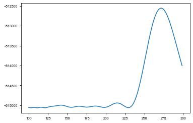

KIC 9651065¶
[13]:
%run setup.py
[2]:
t, y = np.loadtxt('../data/9651065_lc.txt', usecols=(0,1)).T
[3]:
ms = Maelstrom(t, y, max_peaks=5, fmin=5, fmax=48)
ms.first_look()
WARNING: AstropyDeprecationWarning: Importing LombScargle from astropy.stats has been deprecated and will no longer be supported in future. Please import this class from the astropy.timeseries module instead [astropy.stats.lombscargle]
[3]:
array([<matplotlib.axes._subplots.AxesSubplot object at 0x10ff450b8>,
<matplotlib.axes._subplots.AxesSubplot object at 0x12e73f4e0>,
<matplotlib.axes._subplots.AxesSubplot object at 0x12e7835f8>,
<matplotlib.axes._subplots.AxesSubplot object at 0x10f2dd710>],
dtype=object)
[4]:
period_guess = 300
a_guess = 200
time, flux = ms.time, ms.flux
freq = ms.freq
weights = ms.get_weights(norm=False)
[5]:
pg = ms.period_search()
[7]:
periods = np.linspace(100, 300, 300)
results = pg.fit(periods)
100%|██████████| 300/300 [08:44<00:00, 1.71s/it]
100%|██████████| 300/300 [13:08<00:00, 2.55s/it]
100%|██████████| 300/300 [08:56<00:00, 1.68s/it]
100%|██████████| 300/300 [08:50<00:00, 1.85s/it]
100%|██████████| 300/300 [10:05<00:00, 1.83s/it]
[8]:
ys = np.array([[r[0] for r in row] for row in results])
sm = np.sum(ys, axis=0)
period_ind = np.argmax(sm)
plt.plot(periods[:-2], sm[:-2]);

[19]:
from maelstrom.utils import unique_colors
hh = unique_colors(len(ms.freq), cmap='Blues')
[28]:
plt.figure(figsize=mnras_size(240.))
ys = np.array([[np.exp(r[1]["logasini"]) for r in row] for row in results])
for i, c in zip(ys, hh):
plt.plot(periods, i, alpha=1, linewidth=0.8, c=c);
plt.xlabel('Period (d)')
plt.ylabel(r'a$\sin{i}$ (s)')
plt.ylim(0, None)
plt.xlim(100,300)
plt.axhline(184., c='r', linestyle='dashed', linewidth=0.7)
plt.axvline(272., c='r', linestyle='dashed', linewidth=0.7)
plt.savefig(overleaf_path + '9651065_period_search.pdf', dpi=300, bbox_inches='tight', pad_inches=0)
Maelstrom¶
[5]:
ms.setup_orbit_model(period=period_guess)
# opt = ms.optimize()
[6]:
pb1 = ms.pin_orbit_model()
[9]:
opt = pb1.optimize()
optimizing logp for variables: [PB1_mean]
5it [00:00, 16.85it/s, logp=-1.065613e+05]
message: Optimization terminated successfully.
logp: -106561.27624942982 -> -106561.26306231941
optimizing logp for variables: [PB1_logs_lc]
9it [00:00, 20.45it/s, logp=-1.042264e+05]
message: Optimization terminated successfully.
logp: -106561.26306231941 -> -104226.39963321917
optimizing logp for variables: [PB1_omega, PB1_eccen]
181it [00:11, 15.14it/s, logp=-1.002360e+05]
message: Desired error not necessarily achieved due to precision loss.
logp: -104226.39963321917 -> -100236.02734631239
optimizing logp for variables: [PB1_phi]
21it [00:01, 15.82it/s, logp=-1.002145e+05]
message: Optimization terminated successfully.
logp: -100236.02734631239 -> -100214.47184126679
optimizing logp for variables: [PB1_lognu]
292it [00:17, 15.12it/s, logp=-1.002111e+05]
message: Desired error not necessarily achieved due to precision loss.
logp: -100214.47184126679 -> -100211.13341350148
optimizing logp for variables: [PB1_eccen, PB1_omega, PB1_lognu, PB1_mean, PB1_logasini, PB1_logs_lc, PB1_phi, PB1_logP]
118it [00:08, 14.33it/s, logp=-9.991085e+04]
message: Desired error not necessarily achieved due to precision loss.
logp: -100211.13341350148 -> -99910.85482848075
optimizing logp for variables: [PB1_logasini]
48it [00:02, 14.55it/s, logp=-9.991085e+04]
message: Desired error not necessarily achieved due to precision loss.
logp: -99910.85482848075 -> -99910.85482848075
optimizing logp for variables: [PB1_eccen, PB1_omega, PB1_lognu, PB1_mean, PB1_logasini, PB1_logs_lc, PB1_phi, PB1_logP]
67it [00:04, 14.09it/s, logp=-1.571649e+05]
message: Desired error not necessarily achieved due to precision loss.
logp: -99910.85482848075 -> -99910.85482848075
optimizing logp for variables: [PB1_logP]
63it [00:04, 14.40it/s, logp=-9.991085e+04]
message: Desired error not necessarily achieved due to precision loss.
logp: -99910.85482848075 -> -99910.85482848075
optimizing logp for variables: [PB1_eccen, PB1_omega, PB1_lognu, PB1_mean, PB1_logasini, PB1_logs_lc, PB1_phi, PB1_logP]
67it [00:04, 14.16it/s, logp=-1.571649e+05]
message: Desired error not necessarily achieved due to precision loss.
logp: -99910.85482848075 -> -99910.85482848075
[10]:
opt
[10]:
{'PB1_logP_interval__': array(1.15567803),
'PB1_phi_angle__': array([2.23436892, 3.87396393]),
'PB1_logs_lc': array(0.11245058),
'PB1_logasini_interval__': array(1.13126127),
'PB1_mean': array(0.00050174),
'PB1_lognu': array([2.96926915, 3.07787135, 3.42757632, 2.87353169, 3.12211358]),
'PB1_omega_angle__': array([ 3.73297298, -2.46269836]),
'PB1_eccen_interval__': array(-0.00997314),
'PB1_logP': array(5.6068392),
'PB1_period': array(272.28224574),
'PB1_phi': array(0.52316012),
'PB1_logasini': array(5.22275749),
'PB1_asini': array(185.44484209),
'PB1_nu': array([19.47767905, 21.71213556, 30.80189831, 17.69941683, 22.69429519]),
'PB1_omega': array(2.1539708),
'PB1_eccen': array(0.44775606)}
[11]:
# with pb1:
# trace = pm.load_trace('traces/9651065_FINAL_VERSION2/')
[12]:
with pb1:
trace = pm.sample(
tune=1000,
draws=2000,
start=opt,
chains=2,
step=xo.get_dense_nuts_step(target_accept=0.9),
)
Multiprocess sampling (2 chains in 4 jobs)
NUTS: [PB1_eccen, PB1_omega, PB1_lognu, PB1_mean, PB1_logasini, PB1_logs_lc, PB1_phi, PB1_logP]
Sampling 2 chains: 100%|██████████| 6000/6000 [2:20:19<00:00, 2.26draws/s]
There was 1 divergence after tuning. Increase `target_accept` or reparameterize.
[13]:
pm.save_trace(trace, 'traces/NEW/9651065')
[13]:
'traces/NEW/9651065'
[7]:
with pb1:
trace = pm.load_trace('traces/NEW/9651065')
[9]:
pm.summary(trace)
[9]:
| mean | sd | mc_error | hpd_2.5 | hpd_97.5 | n_eff | Rhat | |
|---|---|---|---|---|---|---|---|
| PB1_logs_lc | 0.112488 | 2.788613e-03 | 4.318353e-05 | 0.107175 | 0.118011 | 4872.309174 | 0.999766 |
| PB1_mean | 0.000453 | 4.311418e-03 | 5.258491e-05 | -0.008308 | 0.008533 | 4733.853954 | 0.999893 |
| PB1_lognu__0 | 2.969269 | 6.947471e-08 | 1.007572e-09 | 2.969269 | 2.969269 | 4877.899058 | 0.999750 |
| PB1_lognu__1 | 3.077871 | 1.401069e-07 | 1.790561e-09 | 3.077871 | 3.077872 | 4987.425769 | 0.999809 |
| PB1_lognu__2 | 3.427576 | 1.153276e-07 | 1.482061e-09 | 3.427576 | 3.427577 | 5116.923872 | 0.999820 |
| PB1_lognu__3 | 2.873532 | 2.410755e-07 | 3.310421e-09 | 2.873531 | 2.873532 | 5273.564497 | 0.999758 |
| PB1_lognu__4 | 3.122114 | 2.028430e-07 | 3.086057e-09 | 3.122113 | 3.122114 | 5007.746307 | 1.000491 |
| PB1_logP | 5.606821 | 1.533627e-03 | 2.720497e-05 | 5.603934 | 5.609909 | 3794.642416 | 1.000395 |
| PB1_period | 272.277620 | 4.175774e-01 | 7.407073e-03 | 271.492266 | 273.119474 | 3795.598300 | 1.000395 |
| PB1_phi | 0.522492 | 6.838594e-02 | 1.535542e-03 | 0.387833 | 0.655864 | 2230.647368 | 1.000448 |
| PB1_logasini | 5.221896 | 1.943783e-02 | 2.706993e-04 | 5.183252 | 5.259797 | 4904.909828 | 0.999750 |
| PB1_asini | 185.320254 | 3.604021e+00 | 5.023618e-02 | 178.238043 | 192.418010 | 4901.764291 | 0.999751 |
| PB1_nu__0 | 19.477679 | 1.353206e-06 | 1.962515e-08 | 19.477676 | 19.477682 | 4877.899053 | 0.999750 |
| PB1_nu__1 | 21.712135 | 3.042020e-06 | 3.887691e-08 | 21.712129 | 21.712141 | 4987.425756 | 0.999809 |
| PB1_nu__2 | 30.801898 | 3.552308e-06 | 4.565028e-08 | 30.801891 | 30.801905 | 5116.923857 | 0.999820 |
| PB1_nu__3 | 17.699417 | 4.266896e-06 | 5.859252e-08 | 17.699409 | 17.699425 | 5273.564233 | 0.999758 |
| PB1_nu__4 | 22.694295 | 4.603379e-06 | 7.003588e-08 | 22.694286 | 22.694304 | 5007.746310 | 1.000491 |
| PB1_omega | 2.152293 | 6.991323e-02 | 1.443976e-03 | 2.009589 | 2.279623 | 2570.133760 | 0.999965 |
| PB1_eccen | 0.446589 | 3.034053e-02 | 3.954959e-04 | 0.387161 | 0.507217 | 4711.494926 | 0.999955 |
[10]:
from tqdm import tqdm
taus = []
with pb1:
for samp in tqdm(xo.utils.get_samples_from_trace(trace, size=1000), total=1000):
taus.append(xo.eval_in_model(pb1.orbit.get_time_delay(time), samp) * 86400)
100%|██████████| 1000/1000 [03:09<00:00, 5.29it/s]
[24]:
med_td = np.median(taus, axis=0)
sd_td = np.std(taus, axis=0)
[27]:
mean = np.mean(taus)
mean
[27]:
108.12878089572754
[29]:
np.random.seed(23)
fig, ax = plt.subplots(figsize=mnras_size(240), constrained_layout=True)
ax.set_rasterized(True)
#ax.set_rasterization_zorder(1)
with pb1:
for samp in xo.utils.get_samples_from_trace(trace, size=10):
taumod = xo.eval_in_model(pb1.orbit.get_time_delay(time), samp) * 86400
#ttime = (ms.time_mid + time - samp['tref']) % samp['period'] / samp['period']
ttime = (time) % samp['PB1_period'] / samp['PB1_period']
#ttime = ((ms.time_mid + time) + (samp['phi'] * samp['period'] / (2*np.pi))) % samp['period'] / samp['period']
sort = np.argsort(ttime)
ax.plot(ttime[sort], (taumod - np.mean(taumod))[sort], color=blue, linewidth=0.4, alpha=1,
# rasterized=True,
zorder=1)
ax.set_xlabel('Orbital phase')
ax.set_ylabel('Time delay (s)', c=blue)
times = time# + xo.eval_in_model(phi * period / (2*np.pi), samp)
fold = times % np.median(trace['PB1_period']) / np.median(trace['PB1_period'])
sort = np.argsort(fold)
plt.fill_between(fold[sort], (med_td - sd_td - 108.12878089572754)[:,0][sort], (med_td+sd_td - 108.12878089572754)[:,0][sort], alpha=0.2, color=blue)
ax.set_xlim(0, 1)
plt.savefig(overleaf_path + '9651065.pdf', dpi=300, bbox_inches='tight', pad_inches=0)
#plt.savefig('rast.pdf', dpi=300, bbox_inches='tight')
[37]:
from maelstrom.utils import mass_function
import astropy.units as u
rounding = 3
samples = pm.trace_to_dataframe(trace, varnames=['PB1_period', 'PB1_asini'])
mfs = mass_function(samples['PB1_period'].values * u.day, samples['PB1_asini'].values*u.s)
#mfs = np.array(mfs)
upper, med, lower = np.percentile(mfs.value, [84.13, 50, 15.86])
print('mass_func', ': ', np.round(med,rounding), ' + ', np.round(upper - med,rounding), ' - ', np.round(med - lower,rounding))
mass_func : 0.092 + 0.006 - 0.005
[48]:
varnames = ["period", "asini", "eccen", "omega", "phi"]
for var in varnames:
percentiles = np.percentile(trace['PB1_' + var], q=[15.87, 50, 84.13])
print(f'{var}: {percentiles[0]:.2f} + {percentiles[1] - percentiles[0]:.2f} - {percentiles[2] - percentiles[1]:.2f}')
period: 271.86 + 0.42 - 0.42
asini: 181.74 + 3.48 - 3.70
eccen: 0.42 + 0.03 - 0.03
omega: 2.08 + 0.07 - 0.07
phi: 0.45 + 0.07 - 0.07
[ ]:
Subdividing¶
[5]:
td_time, td_td, td_err = np.loadtxt('../data/kic9651065_uncertainties-plus-time-delay_Q99_llc.txt', delimiter=',', usecols=(0,1,2)).T
td_time += 2400000
td_time -= 2454833
plt.scatter(td_time, td_td)
[5]:
<matplotlib.collections.PathCollection at 0x1c1b8c7f98>
[17]:
import theano.tensor as tt
from maelstrom.orbit import Orbit
with pm.Model() as subdivide_model:
logP = pm.Normal("logP", mu=np.log(272), sd=1.0, testval=np.log(272))
period = pm.Deterministic("period", pm.math.exp(logP))
# The time of conjunction
phi = xo.distributions.Angle("phi", testval=0.5691498)
logs_lc = pm.Normal('logs_lc', mu=np.log(np.std(flux)), sd=10, testval=0.)
logasini = pm.Normal('logasini', mu=np.log(184), sd=10, testval=np.log(184))
asini = pm.Normal("asini", mu=184, sd=10, testval=184)
drift = pm.Normal('drift', mu=0., sd=0.1, testval=0)
# Periastron sampled from uniform angle
omega = xo.distributions.Angle("omega", testval=-0.94)
# Eccentricity
eccen = pm.Uniform("eccen", lower=0, upper=0.9, testval=0.45)
# The baseline flux
mean = pm.Normal("mean", mu=0.0, sd=10.0, testval=0.003)
# Here, we generate an Orbit instance and pass in our priors.
orbit = Orbit(period=period,
lighttime=asini,
omega=omega,
eccen=eccen,
phi=phi,
freq=0)
# psi is defined to be negative but the light curve model takes 2*pi*f * (time - tau), so
# we must flip tau here to phase it on the same values
td = -1*tt.squeeze(orbit.get_time_delay(td_time) * 86400) # Convert to s
td += drift * td_time
taumodel = pm.Deterministic('taumodel', td - tt.mean(td))
pm.Normal('obs', mu=taumodel, sd=tt.exp(logs_lc), observed=td_td)
plt.plot(td_time, xo.eval_in_model(taumodel))
plt.plot(td_time, td_td)
[18]:
with subdivide_model:
opt = xo.optimize()
optimizing logp for variables: [mean, eccen, omega, drift, asini, logasini, logs_lc, phi, logP]
232it [00:00, 388.50it/s, logp=-6.434439e+02]
message: Desired error not necessarily achieved due to precision loss.
logp: -48164.10895929657 -> -643.4438767879074
[19]:
opt
[19]:
{'logP': array(5.60714099),
'phi_angle__': array([2.10553359, 3.94546931]),
'logs_lc': array(3.23034851),
'logasini': array(5.21493576),
'asini': array(184.58303002),
'drift': array(-0.01031364),
'omega_angle__': array([-3.79526569, 2.36557775]),
'eccen_interval__': array(0.0158198),
'mean': array(2.38628165e-07),
'period': array(272.36443175),
'phi': array(0.49021052),
'omega': array(-1.01342257),
'eccen': array(0.45355938),
'taumodel': array([ 147.24755677, 144.46279379, 137.15584656, 125.61074901,
110.08619756, 90.85808226, 62.69573976, 35.92242968,
6.16179366, -25.77210035, -61.20875403, -97.26770722,
-133.55915693, -167.94415079, -196.48908661, -212.07208628,
-204.22591848, -167.13862369, -111.34753077, -53.28526181,
-1.56577971, 41.49527278, 75.96300517, 102.54463349,
122.02595761, 134.79244776, 142.52189448, 144.40171533,
141.41386885, 133.9053782 , 122.17152656, 106.46937425,
87.03086449, 64.07648983, 37.83212893, 8.5522055 ,
-23.44470622, -56.74672629, -94.1095346 , -130.47892897,
-165.38531826, -195.27272446, -213.63731661, -210.33485485,
-177.76442939, -123.79942529, -65.27885537, -12.25517374,
32.25028096, 68.08145115, 95.89737386, 116.48778226,
130.57730867, 138.78373744, 141.62228714, 139.52131553,
132.83928074, 121.88014738, 106.9072041 , 93.48648159,
38.86932568, 9.99699737, -21.6422789 , -55.62855469,
-91.3309334 , -127.72471045, -157.73499242, -201.78592504,
-217.61085319, -210.10090373, -173.31551175, -117.63083725,
-59.52529427, -7.71124515, 35.45054894, 70.01170032,
96.67673285, 116.23221037, 129.38740902, 136.74378113,
138.80229311, 135.97967069, 128.62521857, 117.03595615,
101.47025416, 82.16074252, 59.3282232 , 33.19799679,
4.02286921, -27.88169157, -62.07929926, -97.90871668,
-134.28830068, -169.33225322, -199.59372735, -218.45657152,
-215.90536246, -183.26008555, -129.26301782, -70.74850342,
-17.74513527, 26.7377276 , 62.54763125, 90.34424478,
110.91702108, 124.9902142 , 133.18124953, 136.00502609,
133.88970013, 127.19358306, 116.220579 , 101.2339773 ,
82.46944336, 60.14853638, 34.74478445, -15.19078264,
-48.36442404, -83.52209997, -119.55480671, -158.37870309,
-191.12755968, -215.79765013, -223.64201474, -204.42206369,
-158.06227076, -99.77952969, -55.63572262, 9.83990558,
48.53315287, 78.95689021, 101.8923374 , 118.09469118,
127.77022901, 132.29913797, 127.0451233 , 117.43287614,
103.72528095, 86.16545296, 64.97782528, 41.42409475,
11.24080315, -19.54276931, -52.82662522, -73.31017402])}
[20]:
with subdivide_model:
trace = pm.sample(draws=2000, tune=2000, chains=2, start=opt)
Auto-assigning NUTS sampler...
Initializing NUTS using jitter+adapt_diag...
Multiprocess sampling (2 chains in 2 jobs)
NUTS: [mean, eccen, omega, drift, asini, logasini, logs_lc, phi, logP]
Sampling 2 chains: 100%|██████████| 8000/8000 [00:44<00:00, 181.50draws/s]
There were 4 divergences after tuning. Increase `target_accept` or reparameterize.
There were 2 divergences after tuning. Increase `target_accept` or reparameterize.
[23]:
pm.summary(trace)
[23]:
| mean | sd | mc_error | hpd_2.5 | hpd_97.5 | n_eff | Rhat | |
|---|---|---|---|---|---|---|---|
| logP | 5.607095 | 0.001736 | 0.000027 | 5.603561 | 5.610316 | 3361.652808 | 1.000854 |
| logs_lc | 3.254204 | 0.059783 | 0.000971 | 3.142328 | 3.370083 | 3278.874473 | 1.000252 |
| logasini | 5.158147 | 10.329290 | 0.160456 | -15.967711 | 24.618398 | 4166.228593 | 0.999801 |
| asini | 184.445995 | 3.870201 | 0.063553 | 176.857801 | 191.948600 | 3506.022622 | 0.999973 |
| drift | -0.010248 | 0.005162 | 0.000092 | -0.019934 | 0.000135 | 3809.751947 | 0.999920 |
| ... | ... | ... | ... | ... | ... | ... | ... |
| taumodel__139 | 41.362412 | 5.391437 | 0.094788 | 30.918199 | 51.678708 | 3490.961696 | 1.000202 |
| taumodel__140 | 11.103050 | 5.694254 | 0.098105 | 0.322530 | 22.302191 | 3488.877638 | 1.000171 |
| taumodel__141 | -19.752772 | 6.019379 | 0.100769 | -32.273483 | -8.936965 | 3567.415216 | 1.000086 |
| taumodel__142 | -53.100596 | 6.392202 | 0.103530 | -66.166348 | -41.560302 | 3850.340893 | 0.999968 |
| taumodel__143 | -73.611650 | 6.629763 | 0.105464 | -87.166013 | -61.474205 | 4059.883054 | 0.999896 |
154 rows × 7 columns
[24]:
varnames=['period', 'phi', 'eccen', 'asini', 'omega', 'phi', 'drift']
rounding = 2
for varname in varnames:
upper, med, lower = np.percentile(trace[varname], [84.13, 50, 15.86])
print(varname, ': ', np.round(med,rounding), ' + ', np.round(upper - med,rounding), ' - ', np.round(med - lower,rounding))
period : 272.35 + 0.47 - 0.46
phi : 0.49 + 0.08 - 0.08
eccen : 0.45 + 0.03 - 0.03
asini : 184.37 + 3.89 - 3.72
omega : -1.02 + 0.08 - 0.08
phi : 0.49 + 0.08 - 0.08
drift : -0.01 + 0.01 - 0.0
[30]:
from maelstrom.utils import mass_function
import astropy.units as u
rounding = 3
samples = pm.trace_to_dataframe(trace, varnames=['period', 'asini'])
mfs = mass_function(samples['period'].values * u.day, samples['asini'].values*u.s)
#mfs = np.array(mfs)
upper, med, lower = np.percentile(mfs.value, [84.13, 50, 15.86])
print('mass_func', ': ', np.round(med,rounding), ' + ', np.round(upper - med,rounding), ' - ', np.round(med - lower,rounding))
mass_func : 0.091 + 0.006 - 0.005
[29]:
plt.scatter(td_time % 272 / 272, np.median(trace['taumodel'], axis=0))
[29]:
<matplotlib.collections.PathCollection at 0x1c22c03390>
[ ]: